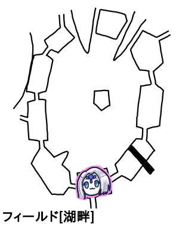
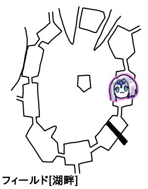
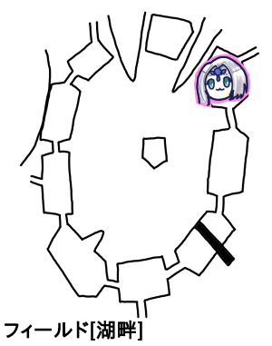

ナナシ「エターナルとはよく言ったものだね」
GM「年金生活になったら加速しそうだよね」

GM「さて、君たちは今湖畔に足を踏み入れたところです。ブルーローズさん主遭遇表を振ってください」
ブルーローズ「はぁーい。5」
GM「はい、移動先決まりました。ではイベントを引き続きブルーローズさん振ってもらえますか」
ブルーローズ「6」
GM「飛ばしてきますねー、ではモンスターと遭遇します。1d6振ってください」
ブルーローズ「5！やだなー」
ピーター「高いと嫌ですよね」
GM「頭部が豚で胴体が水牛の3mほどあるモンスターです。両目は玉虫色に怪しく輝いています。こいつが2体。あと1体は体長10mほどの巨大なイカです」
ナナシ「この辺の敵ってブルーローズの弱点…」
ブルーローズ「そうだ！わたくし水が苦手でしてよ！」
ピーター「魔物知識判定します。じゃあ豚頭の方から。23」
GM「弱点まで抜きました。カトブレパス、命中12回避11の強敵です」
ピーター「イカいきまーす、22」
GM「弱点も抜きました」
みぞれ「くらーけん？」
GM「リトルクラーケンです」
みぞれ「リトルなんだ」
ナナシ「高レベルモンスターのクラーケン！？でもやけにちっちゃいな！？」
GM「これはSNEの手落ちでバルバロステイルズに乗ってないんですね」
というわけでGMから情報提供。
・弱点雷+3
・6部位
・胴体がコア部位で防護点9、HP62
・足が5本で防護点8、HP39
・柔らかいので、打撃武器から受けるダメージ+3
・攻撃に墨発射(貫通)、生命抵抗失敗で盲目状態(全ての行為判定に-4)
・攻撃障害で足があると胴体に近づけない(射撃も含む。魔法は含まない)
・長い足は乱戦エリアを無視してどの範囲でも攻撃可能。範囲は15m
・乱戦エリア内に1d+足の数ダメージ。必中。主動作消費。ひとつでも足があると使えない
ナナシ「これかなり希少な、メイスワールドがソードワールドになる瞬間」
ピーター「魔法は頭に届くんですね」
GM「先制取れたら俺この必中攻撃使うよ」
ナナシ「先制取りました」
ピーター「とりあえずファイアーストーム撃って様子見ます？」
ナナシ「ファイアーストームすげーな、イカも焼ける」
ピーター「ターピーは弱点看破あるので弱点2倍でーす」
みぞれ「ターピー」
ピーター「先制判定お願いします」
ナナシ「もうやった」
ピーター「素早すぎて見えなかった。じゃ22」
GM「足が抵抗成功しました」
ピーター「えーーーー」
GM「カトブレパスは両方失敗しました」
ピーター「25点です」
みぞれ「じゃグレネード撃ちますか」
GM「グレネード範囲どれぐらい」
みぞれ「半径5mの15。20です」
GM「カトブレパスAくん抵抗！Bくんはいちたりない！足は抵抗成功！」
みぞれ「あれ…これ胴体の方がHP高かったのに足と胴体同じぐらいになってる」
タッシュ「これ…エネルギージャベリン胴体に撃ち込んじゃう？」
GM「威力40なのか！あれ、射撃誘導は持ってる？」
タッシュ「持ってない」
GM「あ、でも乱戦になってないんだこれ、今はなってないから」
タッシュ「狙い撃てる」
GM「その言葉は不吉だよ？」
ナナシ「もし取りこぼしたらブルーローズにフォース撃ってもらうんで大丈夫です」
タッシュ「エネルギージャベリン確実化でMP18減らしてー」
みぞれ「じゅうはち」
タッシュ「15と21、確実化してよかった、21で」
GM「ああー確実化してなければー！19」
タッシュ「21点です」
みぞれ「あれ？クラーケンこれで落ちてない？」
ナナシ「あ、もしかしてかけら入ってる？」
GM「クラーケン胴体とカトブレパスを入れ替えてました、クラーケン死亡しました」
ブルーローズ「HPが多い子を殴りに行きます」
GM「カトブレパスAですね」
ブルーローズ「トンファー魔力撃スフィンクスノレッジで23！」
GM「18、ダメでした」
ブルーローズ「よし！あ、異貌化します！あれ私魔力撃って言った？」
ナナシ「(ダイスロール時に魔力撃って)書いてある」
ブルーローズ「33！追加攻撃します、24」
GM「17」
ブルーローズ「31点ダメージ！」
GM「Aが吹っ飛びまーす」
ピーター「ダイス目4でこのダメージおかしいでしょ」
ブルーローズ「わたくしもうダイス目なんて見ていませんわ！」
GM「これだから2.5ではナーフくらったんだよな。最適化し始めると魔力撃2回攻撃になるから」
ナナシ「近づきましてー、デーモンフィンガー使っときます。レザーリボンで挑発攻撃、26」
GM「15」
ナナシ「しばきます！20点！もう一発レザーリボンでいきます！ん？なんだこれは」
ブルーローズ「これはファンブルじゃーないかねぇ」
GM「カトブレパス補助行動を使ってナナシに向かって石化の瞳を使用します。21、精神抵抗でお願いします」
ナナシ「さっき自分がメディテーション持ってないか探してたんですけどねー、何回見ても持ってなかった。6かー6って出ないよなー、あ出た、同値抵抗」
GM「ナナシ、ココフォリアになっても出目が大変だね。こいつ補助行動2回使えるっていうえげつないスキル持ってます。ブルーローズに石化の瞳」
ナナシ「挑発攻撃は？」
GM「なるべく対象を攻撃する、なんだけど石化の瞳はラウンド中同じ対象を選べないので。21」
ブルーローズ「15。魔力撃マイナスなくても失敗してるわ」
GM「器用度か敏捷度が-6になります。偶数なら器用度。6。器用度が0になったら完全に石化します」
GM「カトブレパス主行動で攻撃します。20」
ナナシ「27、スカート回します。おおなにこれ2回転した。26点」
ナナシ「ナナシが叩き込むかー」
タッシュ「あ待って、弱点属性をつける」
みぞれ「こいつ私の計算上だと残りHP3だよ」
ナナシ「俺の計算上もそうだよ」
タッシュ「はい、じゃ夢だったってことで」
ナナシが死にかけのカトブレパスに叩き込んで撃破、戦闘終了。
GM「はげる敵が3体います」
みぞれ「ハゲる！？」
GM「剥げる」
みぞれ「なんで髪の話してるのかと思った」
GM「自動で石化の瞳1200ガメル金赤Sが2つ手に入ります」
「豪華」
各自自由行動。
GM「あと自由行動残ってるのブルーローズとみぞれ？」
ブルーローズ「ビビッド歌います、びびび～♪」
みぞれ「待って石化ってどうなってるの」
GM「戦闘終了しても進行します」
みぞれ「びびびじゃないんだが」
ブルーローズ「呪文は補助行動だから」
GM「歌は中断することになるよ」
ブルーローズ「戦った後は歌わないとすっきりしないのですわ！」
結局歌い切りました。
「そういや今ミッション何受けてたっけ？」
みぞれ「ごめん記録残ってないわ」
おそらく精算の関係で遺跡探索か魚釣りを受けていると思われるが、遺跡が見つかってないので魚釣りを受けたものとしました。
あとボートを借りてフィールド最北の道が繋がってないところへ行けないかという話になりました。
ひとまずエルフの里へ向かうことに。

GM「湖畔イベントです。背の高い葦が生い茂っています」
自由行動で葦の原を探索するという自由行動行動が増えました。
ブルーローズ「探索する人と、お魚釣る人と、石化を解除する私とー」
みぞれ「ここ魚釣れるよね」
GM「聞いてもらえれば教えます」
みぞれ「釣れますか、釣れませんか」
GM「釣れます」
ブルーローズ「石化は達成値の比べ合い？」
GM「リムーブカースは石化進行中なら使える、完全に石化しちゃうとキュアストーンしか使えないです。これ別セッションで揉めたんですがこういう解釈にしました。キュアストーンは達成値の比べ合いはいらないですね」
ブルーローズ「じゃキュアストーンをかけよう、MP低いし。これ1人ずつかけた方がいいですよね」
みぞれ「何言ってるだ」
ブルーローズ「え？2人ですよね石化してるの」
みぞれ「お前だけだよ」
ナナシ「俺は抵抗成功してるぞ」
みぞれ「ななっしーご立腹」
リムーブカースでブルーローズの石化進行が解かれました。
みぞれ「おさかな釣りまーす」
ピーター「釣りまーす」
GM「成功してるね、ここの達成値は10です」
釣りは探索と同様に一番高いのを適用することになり、ピーターが2匹釣ったことになりました。
ナナシ「葦の原探索しますね、18」
GM「難易度16でーす、成功、2d6振ってください」
ナナシ「7」
GM「セイレーンの羽衣を手に入れました」
GM「他の方どうします？」
タッシュ「試しに糸を垂れてみよう、6、ダメでした」
ブルーローズ「ビビッド歌いまーす」

みぞれがイベント6を出しました。
GM「戦闘でーす。直立した二足歩行のドラゴンのような怪物が1体、身体が腐敗と再生を繰り返す4足獣が2体、回転する刃物のついた植物が2体です」
それぞれラグナカング、テラービースト、リッパーリーフでした。弱点も抜きました。
ピーター「私バルバロステイルズ持ってないんで弱点とか教えてください」
「斬撃です」
「ソード・ワールドぽいね」
GM「あれ？衝撃じゃなくて？」
「斬撃って書いてあるけど…」
GM「分かった、版数を教えてくれ。…うん、こっちが古いな」
先制取りました。
ピーター「ファイアーストーム撃ちまーす、22」
ナナシ「その前におぞましい姿の判定を」
GM「そうだな」
ピーター「え？」
GM「テラービーストの特製で、キャラクターの手番ごとに精神抵抗判定ですね、14を目標にお願いします」
ピーター「19、成功でーす、行使判定振り直しですか？」
GM「お願いします」
ピーター「いい目が出たのにー、24、もっといい目が出た」
GM「テラーBがクリティカル抵抗、リッパーリーフ失敗、ラグナカングめんどくさいんでコアとそれ以外で振ります。コア21、いい目なんだけど失敗、コア以外も失敗」
ピーター「てや！21点！！回らなかった」
GM「これで回ったら大惨事だった」
みぞれ「グレネード撃ちます。の前に精神抵抗を…うええ失敗、-2入れて21です、たけぇ」
GM「テラーAクリティカル抵抗、Bは失敗。リッパー失敗、ラグナコア失敗、ラグナコア以外は抵抗しました」
みぞれ「ひどいなー、17点ダメージです」
GM「ラグナカングコアが残り10点ですね」
みぞれ「胴体じゃないんだ」
GM「牙が頭でコアです」
みぞれ「なるほど」
タッシュ「リープスラッシュ撃ち込んでみる…？」
みぞれ「リッパーリーフも残り10点だよ、まとめて消せればお得だよ」
タッシュ「ファイアーボールもありだなー、でも範囲がでかいやつがあったはず。8レベル操霊魔法アシッドクラウド」
GM「普段あんま見ないなー、空気を酸に変えるやつですね」
ナナシ「ちょいちょいちょいちょーい！アシッドクラウド毒属性なんですけどぉー、テラービースト毒無効なんですよねーぇ！」
タッシュ「えまじ？本当だあぶねぇ、じゃあファイアーボールにしよう」
GM「残念です」
タッシュ「ナイスサポート」
GM「アシッドクラウドって言われた瞬間ウィザーズトゥーム見てほくそ笑んでいたのに。目標5体だから外れるやつを1体だけ決めるか。1、テラービーストAが外れました」
タッシュ「う、まあいいや。飛んでけファイアーボール！18」
GM「あ、テラー今からやるから精神抵抗失敗したら引いてくれる？14」
タッシュ「21抵抗」
GM「じゃリッパーリーフAだけが耐えた。ダメージお願いします」
タッシュ「19点」
ブルーローズ「トンファー魔力撃スフィンクスノレッジでテラビを殴ります。22」
GM「19失敗」
ブルーローズ「34点ダメージです」
GM「あーまって、それキャンセルして、先に精神抵抗して。16、さあこい、発狂するがいい」
ブルーローズ「19、ダメージ振り直して33点です」
GM「死にました、そして死にそうなテラビが残ってます」
ナナシ「前に出てーテラービーストに攻撃します。精神抵抗お願いします」
GM「あっそうだった、21、クリティカル」
ナナシ「えぇー！？22…数値では勝ってるのにー」
GM「命中判定お願いします、-2で」
ナナシ「レザーリボンで挑発攻撃、22」
GM「18失敗」
ナナシ「21点」
GM「しにました、戦闘終了です」
剥ぎ取りタイム
ナナシ「みぞれ釣りでいいんじゃない？リッパーリーフとかゴミしか…いやささやかなアイテムしか持ってないし」
みぞれ「じゃ魚釣りします。3匹釣りました」
エルフの里
GM「エルフの里はにぎやかになってますね」
みぞれ「あー商人紹介したからか」
GM「交易で人の行き来が盛んになりました。人間も結構います」
エルフの長「おお！お久しぶりですなあ」
ブルーローズ「あ、言うタイミング忘れちゃったんですけど異貌化解いていいですか」
長の話によると商売はうまくいっているらしいです。
「ボート貸し出したり買い取ったりすることってできますか」
長「我々も商売ですので。我々のボートは持ち運びに適してもおりませんし」
ブルーローズ「北のエリアに送っていただくことはできますか？」
長「送ることはできますがあそこにはクラーケンがいますよ、大丈夫ですか？」
みぞれ「とりあえず移動手段は確保したってことで」
ブルーローズ「北に行ってみる？」
みぞれ「え、なんでクラーケンに突っ込もうとするの？」
ブルーローズ「大体主の巣に遺跡があるから」
みぞれ「水上都市の跡地と左下にある遺跡に行って何もなかったらでいいのでは？」
ブルーローズ「えー…クラーケンきっといないよ」
みぞれ「あーこれダメですわクラーケン絶対北にいますわ」
1人100ガメルをパーティー財布から払って中央へ行くことになりました。
みぞれ「これ往復料金ですか？」
GM「往復料金です」
GM「ちょうどお昼時なのでお昼ごはんが出ます。」
ブルーローズ「船弁」
ナナシ「いかめしとかでしょう」
GM「ここは湖に魔力がこもっている場所があってそれが産物になっているという話です。そこで採れる水は叡智の水と言うそうです」
みぞれ「それも目的だった！」
ブルーローズ「それはどこにあるんですの？」
GM「取れたら数万ガメルで取引されるレベルのレア素材なので分からないし、知ってても教えてもらえないと思われます。その場所を見つけたとしてもセージ技能が足りなくて分からない場合もあります」

島に上陸しました。ボートで連れてきてくれた人は帰りも待ってますのでと言ってその場に待機しました。
GM「島の真ん中には小高い丘になっています。この島全体が遺跡で、石が敷き詰められていたりします」
ブルーローズ「主要ぽい建物があったりしませんか」
GM「中央に円形に並んでいる大きな石碑があります。その中央に真っ青な石碑があります」
ブルーローズ「ぜひ見に行きたいですわね」
みぞれ「そうね」
ブルーローズ「インスピレーションが湧きそう」
みぞれ「そっち？」
GM「では君たちは石碑に近づいていきました。石碑の正面には5つの瞳の紋章が刻まれており、その下に鍵穴があります」
みぞれ「あそこの遺跡で手に入れてこいってことかな」
ナナシ「鍵開け試してみていいすか」
ブルーローズ「石碑で鍵開けって絶対ダメだよね」
ナナシ「はい、23」
みぞれ「高い」
GM「はい、これは開かないことがわかりました、分かった瞬間危険感知をお願いします、目標値はヒミツです」
みぞれ「全員ですか？」
GM「鍵開けを試みたナナシだけです」
ナナシ「ウカツ！21」
GM「背中にぞくっとしたものを感じて飛び下がると、そこに石碑から青いイナズマが落ちてきました」
みぞれ「あっおーいーいっなっずーまがーぼっくーをっせーめーるー」
GM「青い稲妻に責められました、さあどうしますか」
ブルーローズ「歌ってみますか、えーとこれなんだっけ、楽譜」
みぞれ「どう考えても勇猛なるエッダではないな、英明なるイラボスですね」
ブルーローズ「では英明なるイラボスを歌います。器用度？スフィンクスナレッジ使おうかな」
ナナシ「スフィンクスナレッジ知力だよ」
GM「ナレッジだから知力だね」
ナナシ「魔力撃は知力ブーストで威力上がるから」
ブルーローズ「なるほど理解した」
ナナシ「このゴリラよ…知力を筋肉に変えて殴る！」
ブルーローズ「クリティカルしました。歌声が風にのって遠くへ」
GM「何も起きませんでした」
みぞれ「ここはイベントとかないの？何も振ってないけど」
GM「振ってないね。探索はできるよ」
ブルーローズ「ここで1ターンとどまることはできますか？」
GM「できるよ」
ブルーローズ「何回か探索したら？」
ナナシ「いいんじゃない？」
ブルーローズ「冒険者のくせに遺跡を探索しないの？」
ナナシ「鍵開け失敗したしなー」
みぞれ「とりあえず魚釣りました。2匹釣れました」
ピーター「探索しまーす。11、低い、ダメですね」
タッシュ「レンジャー取ったほうがいいのかなー」
ピーター「タッシュ先生自分に救命草使うんですか」
ナナシ「タッシュ先生スカウト取って本当に先制ダメだった時に最終防衛ラインになってもらうとか」
GM「やだよ俺ファストアクションで2回魔法撃つタッシュ先生とか見たくない」
リーダーの強い希望により1ターンとどまることになりました。
GM「お昼を越えたところで、いいタイミングですねー、主が移動する可能性があります。ブルーローズさん振ってください」
ナナシ「やっぱりブルーローズがここに居座ろうって言ったからじゃーん」
ブルーローズ「ほら3だって！ほらこないこない！」
GM「とどまってよかったかもしれない。西南の方向に波が立って、北の方向に悠然と泳いでいく恐ろしい魔物の姿が見えます。実はさっきまで遺跡入口辺りにいたんですね。俺は西へいけ！西へいけ！と思っていました」
中央の小島2回目
ナナシ「再度探索します。15…」
ピーター「探索します。ファンブルしました」
ブルーローズ「みんなさっきのイカ見て動揺してるんだよ」
みぞれ「探索します。クリった」
ブルーローズ「動じない」
GM「宝石を手に入れました」
ブルーローズ「ビビッド歌おうかなー」
GM「あと自由行動残りはタッシュ先生だけかな？」
タッシュ「今すぐレンジャー取っていいかな？やることがない」
GM「こんなフィールドワークするシナリオもないしね普通」
ブルーローズ「こんなところにいられるかー！皆様帰りますわよ！」
ナナシ「フラグ立てんな」
みぞれ「これエルフの里に直帰ですか？イベント起こりますか？」
GM「起こしますか。ピーターどうぞ」
ピーター「5です」
ナナシ「叡智の水探索チャーンス！」
ブルーローズ「エルフの里の近くで湧いてたら受けるよね」
ピーター「イベントロール5です」
GM「湖岸に船をつけたら、そこに落ち込んでいるエルフの男がいました。『今日は全く魚が釣れなかったなー』」
みぞれ「どこかで見たなこれ」
ブルーローズ「落ち込んでるなら慰めに行きます。何かお力になれます？」
エルフの男「なれます！もう一度漁に行こうと思うんですが手伝ってもらえますか！？」
ブルーローズ「どこで漁するんでしょう」
GM「この場でやります」
ブルーローズ「ではこちらにはスーパー釣り師がいるので」
みぞれ「えぇ…」
GM「じゃあスーパー釣り師判定どうぞ。10で成功です」
みぞれ「18、成功」
GM「エルフの男はお礼をしてくれますよ。達成値10で無料宿泊、13で行きたい場所があったらどのエリアへでも船で連れていってくれます。徒歩で行くのと同じ時間がかかりますがイベントは飛ばせます。で、達成値16でいい釣り竿がもらえます。釣りの達成値+1で振れます」
ブルーローズ「この人こんないい釣り竿持ってるのに失敗しちゃったんだ」
エルフの男「うわーーーこの人傷をえぐってくるーーー」
ブルーローズ「リザードマンキャプテンの上の#1エリアに送ってもらうというのは？」
 (参考画像)
(参考画像)
エルフの男「まじで言ってますか」
ブルーローズ「何か問題ですか？」
エルフの男「あそこ敵がいっぱいいますけど…行けと言うなら行きますけど…」
みぞれ「帰ってくると夜になるのよね」
ブルーローズ「あ！いいこと考えた！未探索の北に行ってから帰ってきて休んで#1に行くのはどう？」
リザードマンキャプテン倒しに行くか、クラーケンがいない間に#8の遺跡に行くかの選択になりました。
「とりあえず北に行って魚釣ってから考えよう」

GM「木々が生い茂った湖の岸辺です。北側の山が行く手を阻んでいます」
イベントは何もなしでした。
みぞれ「ここ何かめぼしいものはないの」
GM「ないでーす」
ブルーローズ「今こそビビッドを歌う時！」
みぞれ「探索しまーす」
ナナシ「釣りは？」
みぞれ「あっそうだった」
ピーター「3匹釣りました」
ブルーローズ「揃った」
ナナシ「探索します」
GM「青紫をしたひし形の果実があります」
ナナシ「悪魔の果実？」
ピーター「判定します。21」
GM「ラプロアの実と呼ばれるもので、幻と言われるほど珍しい果実です。特殊効果は……めちゃくちゃおいしい」
ナナシ「代価はいくらですか」
GM「150ガメルです」
ナナシ「やすい」
GM「君ら金銭感覚麻痺してるみたいだけど1個の果実に払う額としては高いよ」
ナナシ「一泊30ガメルだもんな」
GM「5万円ですかね、これが1d6個手に入ります」
ナナシ「6個手に入れました」
GM「で、みんな行動した？」
「タッシュ先生残ってる」
みぞれ「タッシュ先生いつもの何もやることがない感じ」
ブルーローズ「タッシュ先生をいじめないの！」
ブルーローズ「イベント4、湖畔イベント6です」
ナナシ「来た！」
GM「葦の原が出てきました」
みぞれ「ななっすぃー！ななっすぃー！」
ナナシ「まかせろ！15」
GM「失敗しました」
ナナシ「探索リトライなかったっけ」
みぞれ「とりあえず探索します、15…」
GM「冒険者の私塾は立ってる？」
ナナシ「立ってる。使います。振り直し17！成功！」
GM「結果表を振ってください」
ナナシ「10」
GM「何か瓶を見つけました。1d6」
ナナシ「3。これは…？」
GM「薬品ですね。アンチドーテポーションです」
ナナシ「アンチ童貞ポーション？」
GM「このギャグ鉄板だな、俺これ5回聞いた。500ガメルのポーションで、達成値15以下の毒を消す効果があります」
GM「エルフの集落では宿泊ができますよ」
「主判定あるから泊まらない方がいいよね」
結局遺跡に行くことになりました。
GM「ではエルフの里から＃10→#9→#8で3回移動になります」
ブルーローズ「ビビッドも3回歌えますね！」

GM「船で移動したので崖下に到着しました」
釣り人イベントが発生。
GM「岬の下で落ち込んだ釣り人がいます」
ブルーローズ「同じ人じゃないですよね」
GM「さっきの人は今連れてきてくれてるから」
ブルーローズ「漁のお手伝いしましょうか？」
エルフ「お願いできますか！」
みぞれ「なんでわかるんだ。釣り判定19です」
GM「集落に泊まる権利と送ってもらう権利、釣り竿はもう持ってるので、4段階目は情報になります」
エルフ「葦の原で綺麗な瑠璃色に輝く液体を見たんだ」
ピーター「みんな予想ついてるだろうけどセージ判定しまーす、21」
GM「それこそ叡智の水ですね。この人は飲んでおいしかったって言ってます」
みぞれ「数万ガメルー」
ピーター「分からなかったんですね」
GM「これで叡智の水が葦の原にあることがわかりました。この情報を使うことで1回だけ探索時にボーナスが得られます」
「1回だけかー」
時刻は18時になりました。遺跡へ向かいます。
GM「遺跡は最初は自然な洞窟で、途中から人工的な作りになってます。ここの規模はランダムになります。2d6どうぞ」
ブルーローズ「うわ、11、こんなところで出るなよ！」
みぞれ「これランダムなんだ、イベント遺跡なんだよね一応？」
ブルーローズ「我々の見つけている十把一絡のものとは違うのですね」
GM「明かりはどうしますか？」
みぞれ「タッシュ先生がなんとかしてくれる」
ブルーローズ「先生おねがいします！」
タッシュ「これ狙われるの私だよね」
ピーター「タッシュ先生防護点高いから大丈夫」
GM「ダンジョンは30分単位で経過していきます。今18時です。よろしくお願いします。これはそんなに大きくないダンジョンなんですが、ブルーローズが大きくしてくれました」
岬の洞窟～深度0
「急いで潜ってしまおう」
GM「難易度は15です」
ナナシ「じゅうご…？じゃ普通に進みまーす」
GM「これ冒険者レベル基準なんですよ」
ナナシ「おっしゃーうぉーいへーい、22」
GM「成功です」
ナナシ「5進みます」
岬の洞窟～深度5
GM「魔物が出てきました、今日はバトルするねー」
ナナシ「そういう日ありますよね、やたら戦う日」
GM「みぞれさん種別お願いします」
みぞれ「2」
GM「おっと？これ初登場かな、敵は1体です。3mを超える体躯で肌は岩のよう、筋肉隆々の蛮族と思われる魔物がいます。引き締まった体格をしています」
ピーター「魔物知識判定しまーす。18、ひっく」
GM「これでも弱点抜けちゃうんですよ。あなたおかしい。8レベル蛮族モンスターダークトロールです」
ブルーローズ「こいつ巨人語喋れる？」
ナナシ「交易共通語、汎用蛮族語、巨人語って書いてある」
ブルーローズ「かしこいんだ、わたし交易共通語言語覚えるのにバード取ったのに」
ナナシ「こいつもバード取ったんだよ」
ブルーローズ「じゃ言いたいことあったら言えるんだ」
ナナシ「先制ぶっちぎり取った」
GM「マルチアクションとか使いたかったんだけどなー」
タッシュ「え、出てきたの1体？チアでいい？」
みぞれ「こいつ卑怯な真似を嫌い人族であっても強い者には敬意を払うって書いてあるかっこいい」
ナナシ「そうなんすよ、タイマン張っていい？」
「がんばえー」
ナナシ「レザーリボン挑発攻撃でーでゅくし！21、あ、クリティカルレイ使っといていいですか」
GM「本来順序的にはまずいですがいいですよ。回避！13、無理でした」
ナナシ「あっ回らなかった、21点、ファストアクションでもう一発。もっかいクリティカルレイって切れるんだっけ」
GM「アルケミスト？同系のやつは使えないよね」
ピーター「そもそも副行動が1ターンに1回しかできないから」
ナナシ「じゃあ普通にレザーリボンで攻撃、21」
GM「16」
ナナシ「どん！お、お、おー？4回転した！45点！」
GM「なかなかやるではないか的なことを言っています。というわけでこちらはマルチアクションでキュアハートを宣言します。20点回復です。殴ります。18」
ナナシ「23、ブレードスカートいきまーす、16点」
ナナシがダークトロールに21点ダメージ。
ダークトロールがキュアハートで16点回復。
ダークトロールの攻撃をナナシが避けてブレスカで13点ダメージ。
ダークトロールが自動回復(以下記述省略)。
ナナシ「じわじわ回復されていく」
ナナシがダークトロールに2回転39点ダメージ。
ブルーローズ「すごいねーナナシなのに」
ダークトロールがキュアハートで17点回復。
ダークトロールの攻撃をナナシが避けてブレスカで15点ダメージ。
ナナシ「クリティカルレイ切ってー、いやーこんなクリティカルレイすることもないよねー、あ、ファンブった」
GM「まだクリティカルレイで一発で持っていかれることあるんだな、キュアハート、クリティカル、19点回復」
ダークトロールの攻撃をナナシが避けてブレスカで2回転21点ダメージ。
ナナシがダークトロールに21点ダメージ。
GM「困ったなー有効打が撃てないんだよなー」
ダークトロールがキュアハートで19点回復。
ダークトロールの攻撃をナナシが避けてブレスカで16点ダメージ。
ナナシ「俺もうMP1なんだけど」
ナナシがダークトロールに1回転31点ダメージ。
ダークトロールの攻撃をナナシが避けてブレスカで1回転19点ダメージ。
GM「キャッツアイ切れてる？」
ナナシ「切れてる。攻撃します。20」
GM「20回避！」
ナナシ「キャッツアイがここで生きてくるのか。ブルーローズくる？」
ピーター「後衛がバフかける？」
ナナシ「そういう熱い展開にしてくれる？」
タッシュ「大丈夫リザレクションの準備はしてるから」
ダークトロールの攻撃をナナシが避けたがブレスカ発動せず。
GM「お、HP52点まで戻ってきたぞ」
ブルーローズ「バトルソングを歌ってあげようかー、これ届くっけ」
GM「これ洞窟だから5m、届くよ」
ブルーローズ「命中力+2、ダメージ+2です」
GM「タイマンじゃなかったのか」
ブルーローズ「じゃやめるわ」
ナナシがダークトロールに19点ダメージ。
ブルーローズ「逆に苦行とかかけてあげようか？使命の達成を拒むと1ラウンド1点ダメージ受けて、達成しても呪いが解けるだけっていう」
「やめたげて」
ダークトロールがキュアハートで16点回復。
ダークトロールの攻撃をナナシが避けてブレスカで15点ダメージ。
ナナシがダークトロールに1回転27点ダメージ。
GM「こっちはもうキュアハート使えないんだよねー…マルチアクション、ヴァイスウェポンを宣言、命中1ボーナスもらいます！20！」
「おー」
ナナシ「27！ブレードスカートいくべ！16点」
ナナシがダークトロールに攻撃を命中させるがダメージが1ゾロ。
GM「大きく息をすってー」
ブルーローズ「吐いてー」
GM「魔力撃で殴る！18」
ナナシ「26、ダメージは1ゾロ」
「今日飛ばすねー」
ナナシがダークトロールに18点ダメージ。
ブルーローズ「ダークトロール魔力撃分のマイナス入ってましたか？」
GM「忘れてた」
ブルーローズ「わたし魔力撃のプロなんで」
ダークトロールの攻撃をナナシが避けたがブレスカ発動せず。
ナナシがダークトロールに1回転26点ダメージ。
ダークトロールの攻撃をナナシが避けてブレスカで20点ダメージ。
ナナシがダークトロールに1回転19点ダメージ。
ダークトロールの攻撃をナナシが避けてブレスカで1回転22点ダメージ、撃破。
みぞれ「あ、終わったー？おつかれー」
ブルーローズ「このダークトロールはナナシが剥ぐべきでしょう」
ナナシ「じゃ剥ぎますか」
宝石5個とトロールの血を手に入れました。
難易度16となりました。判定成功、5進みます。
岬の洞窟～深度10
GM「なにもない部屋を通ってるように思った次の瞬間、床がスライドし…ているのに気づくかもしれない！罠感知なのでスカウト技能でしか探知できません！」
ナナシ「18！」
GM「迂闊に進むと青い稲妻が君を貫く！進み方によって回避できるよ、探索判定してください」
ナナシ「成功」
ブルーローズ「ここナナシの洞窟だね」
難易度は17になりました。判定成功、また5進みます。
岬の洞窟～深度15
GM「魔法陣が出てきた！1d6で効果を決めてください」
タッシュ「5」
GM「魔法陣は虹色に輝く！ダンジョンの床や壁が歪む！瞬間移動が行われます。2d6-7進む！」
タッシュ「4です」
岬の洞窟～深度19
GM「最深部まで急がなくてもよいほど近いことがわかります。ここでイベントがあります。タッシュ先生振っちゃって、1d6」
タッシュ「4」
GM「罠感知判定をするんですが、これ深ければ深いほど罠が難しくなるって設定なのよ。難易度19です」
ナナシ「じゅうきゅう。ほあーーー18、惜しい」
GM「振り直せるものはありますか」
ナナシ「ないっすね…」
GM「では罠が発動します。突然吹き出してきたガスに全身が包まれます。赤いガスで強い匂いがします。装備がぱきぱきと嫌な音を立てて破壊されていきます。2d6で6以下だと赤錆が浮いて使い物にならなくなります」
ナナシ「研磨したら直るとかあります？」
GM「あります」
みぞれ「専用装備使えなくなったら泣いちゃうわ」
GM「じゃあうさちゃんから判定しましょうか。武器からどうぞ」
ピーター「わたし武器ないです。宝石ケースなんですよ」
GM「じゃあ防具は？」
ピーター「ソフトレザーです。ころころ。ソフトレザー！！！」
みぞれはクロースアーマーのみ破壊。
ナナシはレイピアとアラミドコートとバックラー破壊、敏捷が4下がりました。
ブルーローズはトンファー破壊。
後衛陣の被害軽微、前衛陣の被害甚大。
ブルーローズ「私は今こそ尻尾を生やすべきでは？」
GM「ここまで強力な罠を張れたのはブルーローズのおかげです」
ブルーローズ「なんで？？？」
GM「遺跡クリエイトしたから」
ブルーローズ「ぎにゃーーー」
岬の洞窟～深度19(2回目)
GM「もう一回イベントお願いします、ピーター！」
ピーター「3！」
GM「罠感知判定19でどうぞ！」
ナナシ「18」
GM「アンコールありがとー！ぶしゅううううう」
残った武器防具は無事でした。
GM「では探索判定を」
みぞれ「指輪、指輪装備して指輪」
ブルーローズ「知力の腕輪を渡すから装備して」
タッシュ「まって腕輪？知力の指輪割る用に持ってるから使って。ていうか割る用の指輪持っておいて」
ナナシ「18、割ります！ぱりーん」
GM「先進めます！1d6振ってください」
ナナシ「5」
GM「あまりに低いとまたアンコールの可能性があったからよかったね」
岬の洞窟～深度22
ブルーローズ「ぴったりですか？」
GM「オーバーしてます、がここで行き止まりです。君たちは迷宮の最深部にたどり着きました！そこはドーム状の天井を持つ部屋です。そこには一体の金属でできた体長3mぐらいの青銅製の人形の生き物がいます。関節が丸みを帯びて、スムーズに動きます。まるでバンダイのプラモデルのように」
タッシュ「嫌ですね」
GM「コンジャラーがいるんで見ればわかります。9LVのブロンズゴーレムです。なおこいつにはかけらが入ってます」
ピーター「魔物知識判定しまーす」
GM「その前に、今データを見てもらって、ここまでをセーブするか決めてください」
ここまでをセーブして続きは次回となりました。
GM「どこか平日の夜とかに今回の解決編だけやる？」
「ダンジョン終えて村に帰るところまでやるとまた長引くんじゃない？」
「まだダンジョンクリアで何が起こるかも分かってないからなあ」
とりあえずどこかの平日にダンジョン終了までやろう、ということになりました。